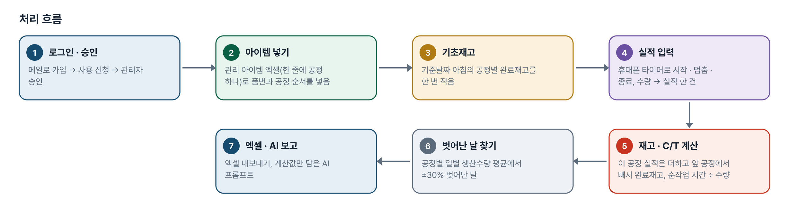
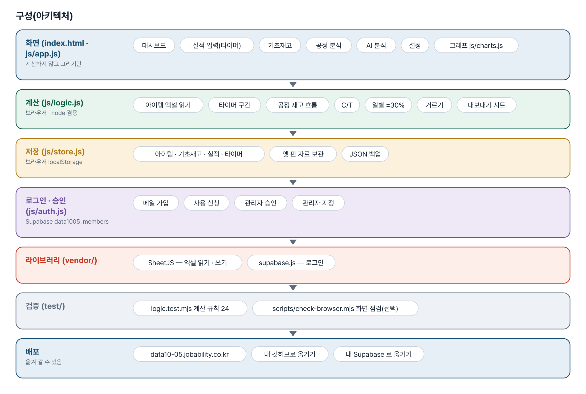
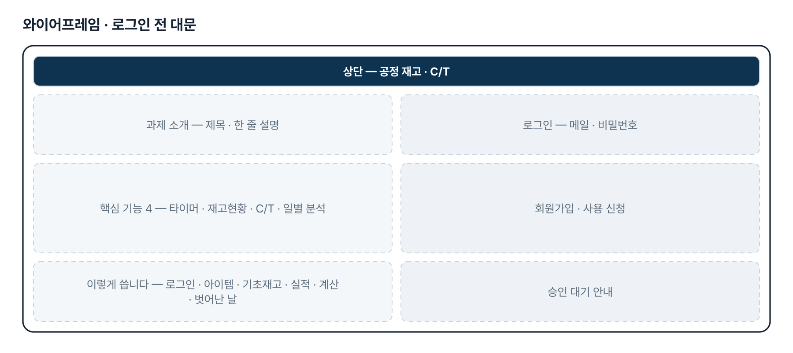
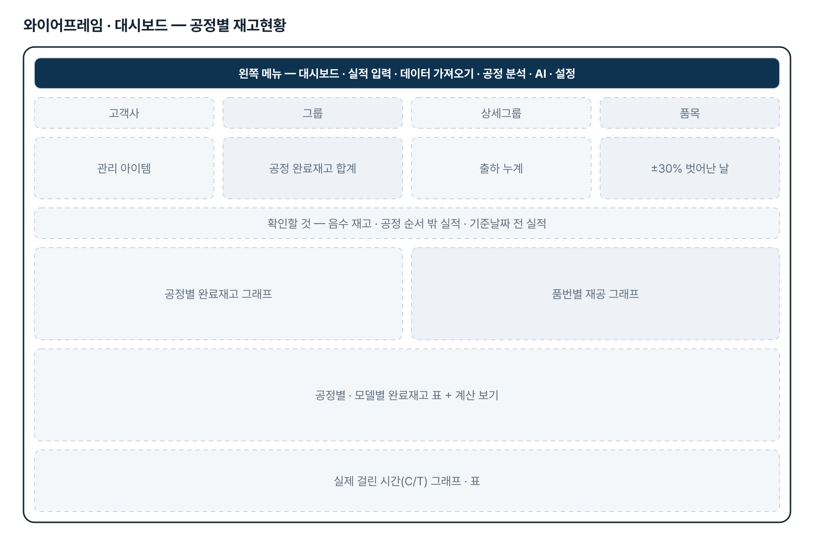
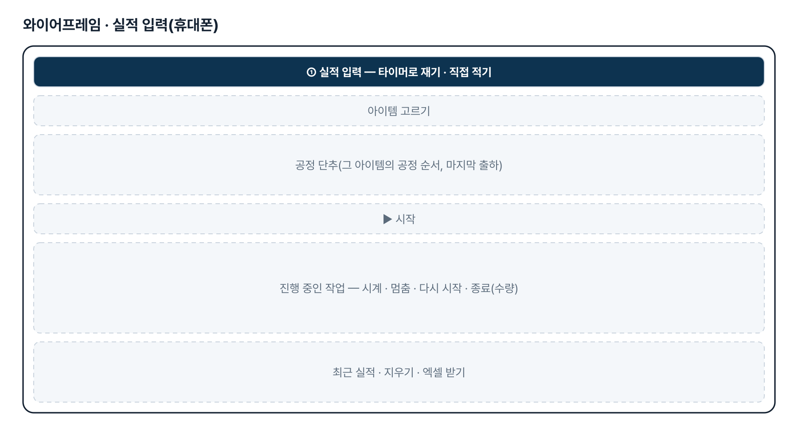
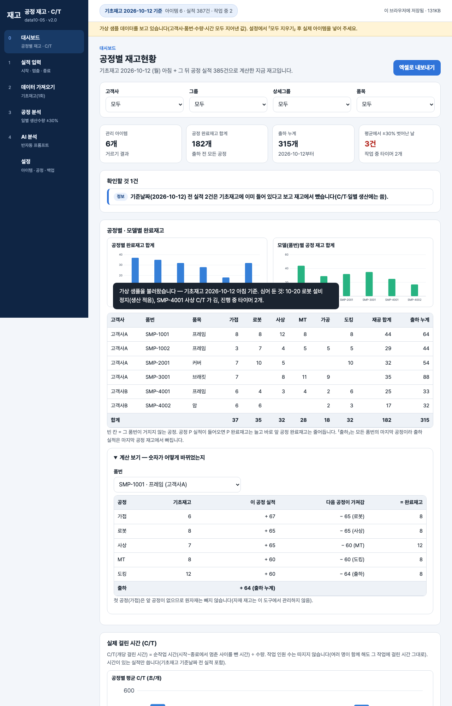

기획서 내려받기
파이프라인 · 아키텍처 · 와이어프레임 · 개발일지가 들어간 워드 문서입니다. 버전마다 따로 남깁니다.
| 버전 | 날짜 | 바뀐 점 | 파일 |
|---|---|---|---|
| v2.0 | 2026-11-10 | 최종 기획서 — 파이프라인 · 아키텍처 · 와이어프레임 정리 / 로그인 · 사용 신청 · 관리자 승인(요청자 Supabase 로 옮길 수 있게) / 로그인 전 대문 | 워드 내려받기 |
요구사항과 구현
| 기획서 요구 | 구현 |
|---|---|
| 실적 현장 전산입력 | 휴대폰 실적 입력 — 타이머(start · stop · restart · end, 새로고침에도 이어짐)와 직접 적기 |
| 출하 대비 재고현황 자동 산출(3차: 기초재고 + 실적 → 공정별 재고현황) | 기초재고 + 이 공정 실적 − 다음 공정이 가져감 = 완료재고, 대시보드 표 · 그래프 · 「계산 보기」 |
| 공정별 실적 분석 | 공정별 일별 생산수량 · 일 평균 · 평균에서 ±30% 벗어난 날(많음 · 적음)과 그날 실적, 공정별 C/T |
| 출하도 공정 실적으로 입력(10-30 답) | 「출하」를 모든 아이템의 마지막 공정으로 자동으로 붙이고 출하 실적은 마지막 공정 재고에서 뺌 |
| 첫 공정 원자재 재고는 고려하지 않음 · 공정당 인원은 따지지 않음(10-30 답) | 첫 공정은 앞 공정 차감 없음, C/T 는 작업 인원 수와 관계없이 순작업 시간 ÷ 수량 |
| 실제 관리 아이템 목록 그대로 넣기(10-30 첨부) | 한 줄에 공정 하나 모양 엑셀 읽기 · 받기, 옛 「공정 순서」 한 칸 양식도 읽음 |
| 고객사 발주서 · 납품이력 자동 다운로드 | 3차 범위 재설정으로 뺐습니다(고객사 포털 확인 뒤 다시 검토) |
| 여러 휴대폰 실적을 한곳에 | 2단계 — 지금은 이 브라우저에 저장, 엑셀로 받기 |
그림으로 보기






개발일지
2026-11-10 · 최종 기획서 · 로그인
- 로그인 · 사용 신청 · 관리자 승인 키트 적용(data1005_members)
- 로그인 전 대문 문구를 기획서에서 만듦
- 최종 기획서(워드 · plan.html) · README 정리
- 로직 테스트 24개 통과
2026-11-08 · 4차 — 10-30 답 반영
- 관리 아이템 엑셀을 한 줄에 공정 하나 모양으로 읽기 · 쓰기(옛 양식도 읽음)
- 출하도 공정 실적 · C/T 인원 무관 · 첫 공정 원자재 미차감을 화면 안내로 확정
- 테스트 24개(5개 추가)
2026-10-28 · 3차 범위 재설정
- logic.js · app.js 새로 씀 — 화면 6개
- 타이머(새로고침 · 화면 꺼짐에도 이어짐), 계산 보기, C/T, 일별 ±30%
- 옛 판 자료 보관 · 안내
- 테스트 20개, 일부러 깨뜨려 확인
2026-10-21 · 2차 — 실제 양식 3종
- 재고 체크 통합문서 전용 읽기, 포털 발주서 빈 열 건너뛰기
- 재고 체크 입력 화면, 안전재고 산식, 품번 → 모델 연결
- 테스트 37개
2026-10-20 · 1단계
- 실적 입력 · 엑셀 가져오기(자료 종류 판별) · 재고 과부족 · 진도율 · 공정 투입조정 · AI 프롬프트
- 테스트 27개